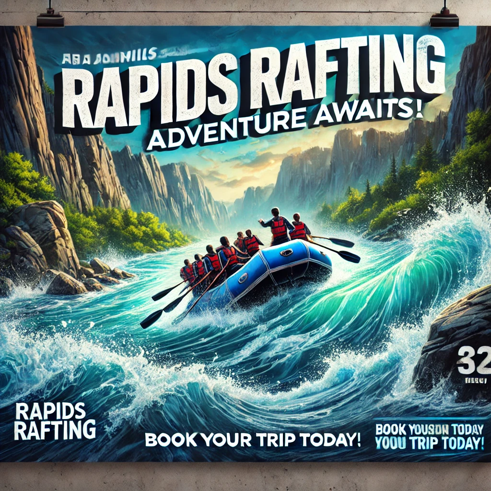
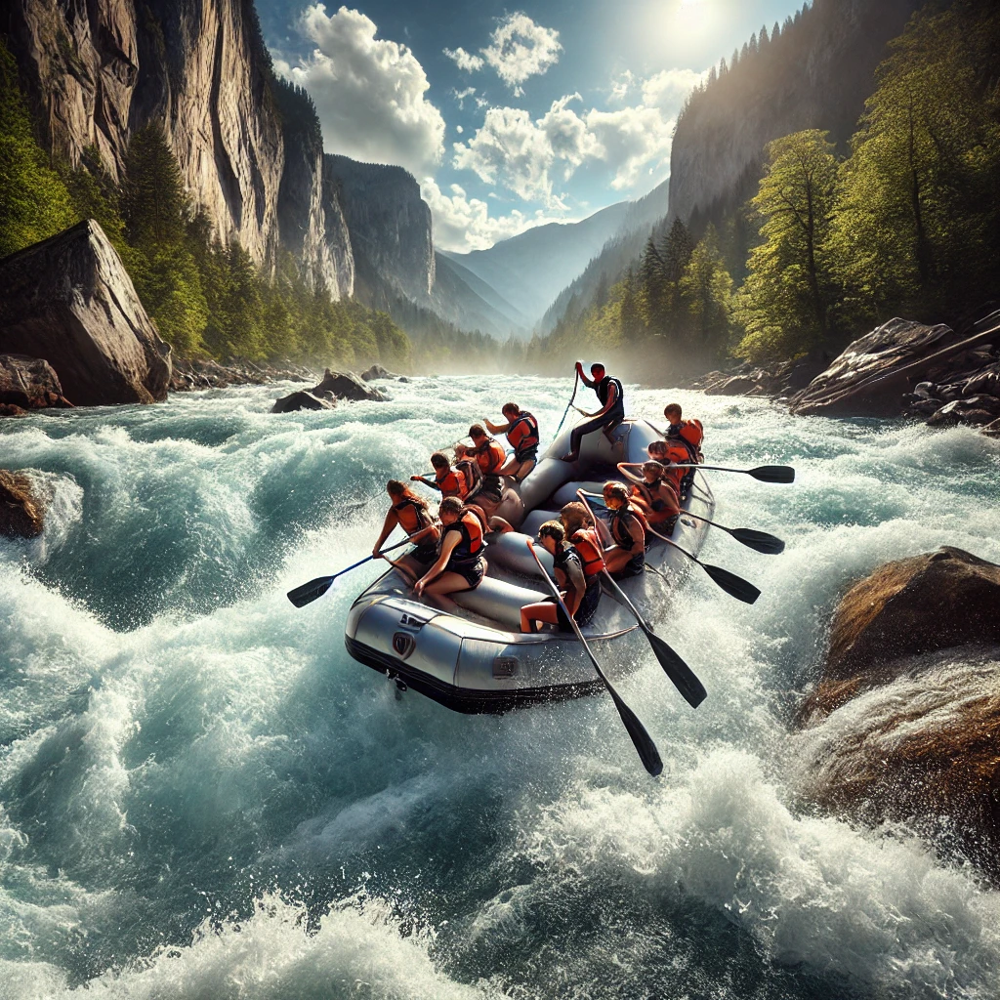
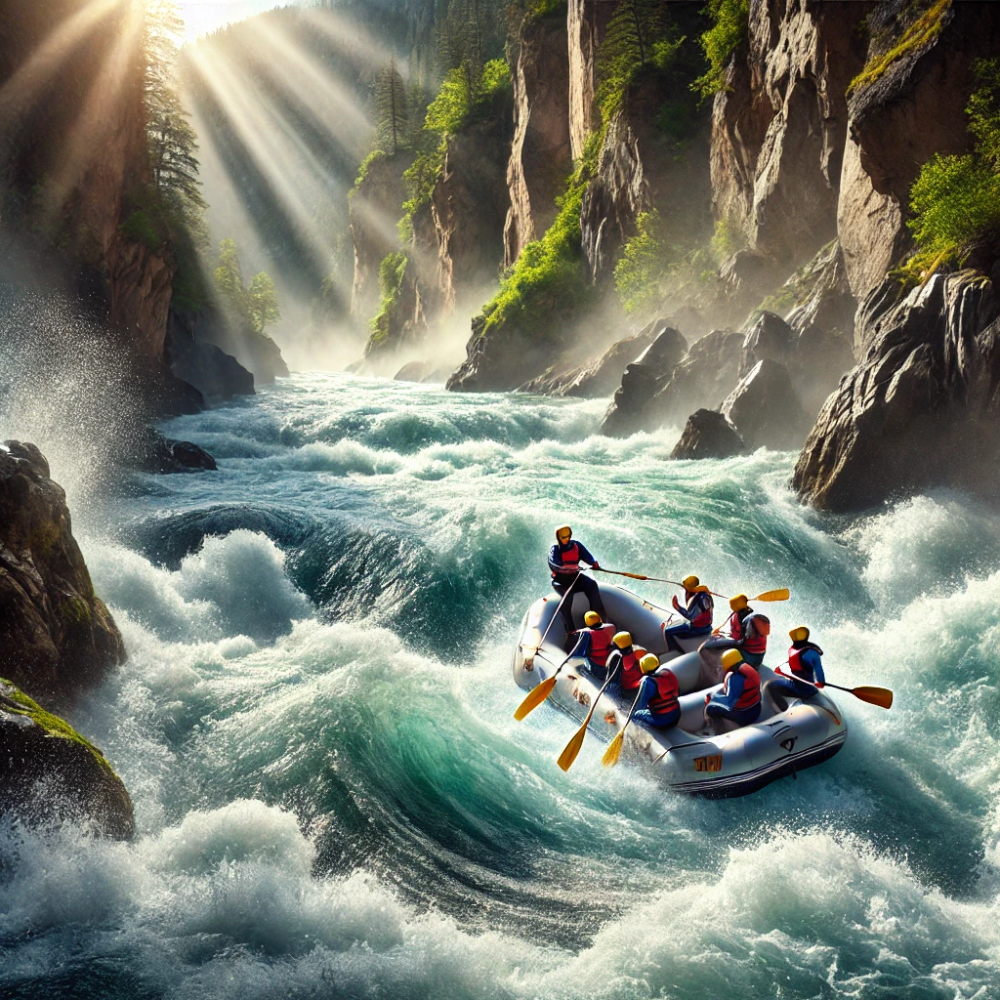
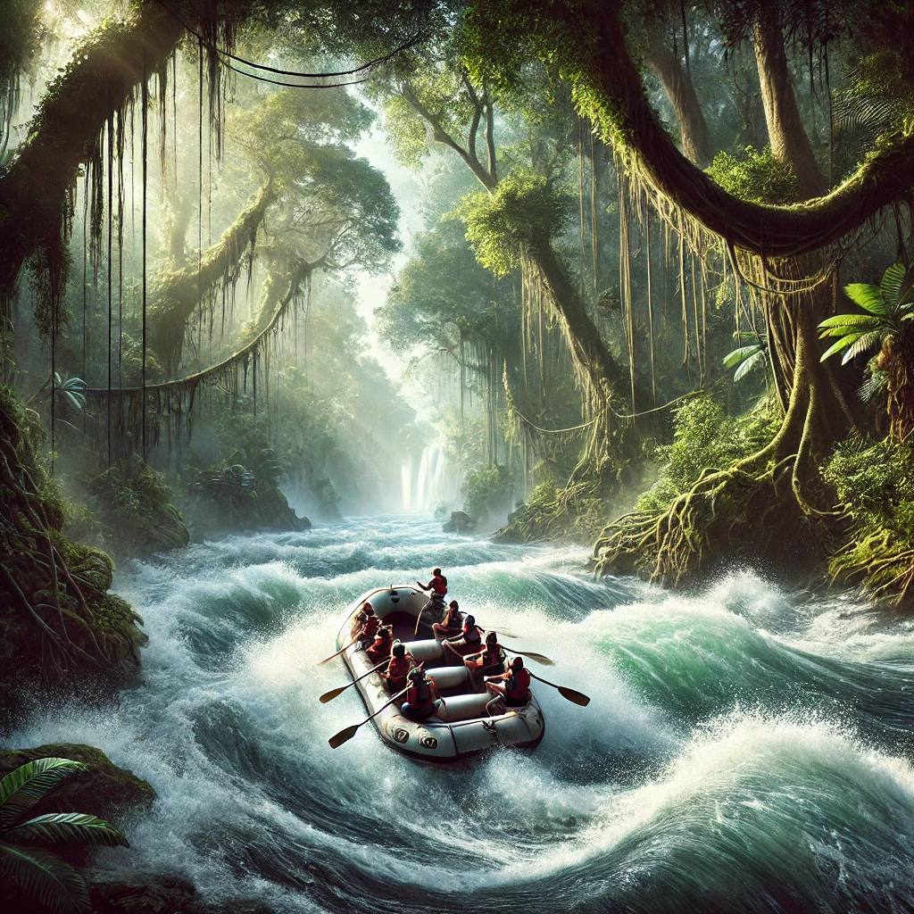

Los Dientes del Diablo: Brace yourself for a thrilling adventure as you paddle through one of the most famous and challenging rapids in the world. This full-day excursion is not for the faint of heart!
Mallard: Perfect for those looking to experience both serene river stretches and heart-pounding rapids, Big Mallard is a trip for adventure lovers of all experience levels.
Half Day Adventure: Short on time? Our half-day rafting adventure is packed with excitement and perfect for those seeking a quick thrill in the heart of nature.
Rush: A non-stop action-packed adventure that takes you through continuous rapids while offering stunning scenic views.
Rapids: Enjoy a day filled with natural beauty, as you raft through some of the most picturesque rapids in the region, surrounded by towering mountain ranges.
Founded over two decades ago, White Water Rafting Adventures started as a passion project for a small group of explorers. What began as a few friends guiding others down the river has grown into a full-scale adventure company, known for its commitment to both safety and thrills. We have successfully guided thousands of guests through some of the most challenging rapids, offering unparalleled excitement and a connection to nature that few experiences can match.

Our philosophy has always remained the same: connect people with the river, the rapids, and the natural beauty that surrounds us. Over the years, we have expanded our operations, introducing new locations, varying levels of difficulty, and unique expeditions that attract adventurers from all walks of life. We believe that the river has something to offer for everyone, and we are proud to continue sharing these experiences with the world.


